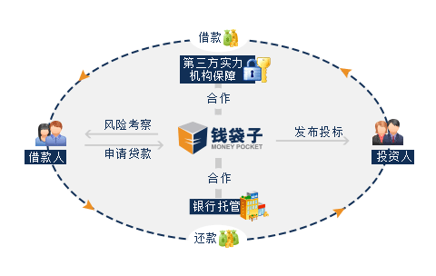

"钱袋子"（www.fcqdz.com）是由富昌金融集团发起设立的大型互联网投融资平台。长期以来，中国金融业一直由国有银行主导，金融体系建设的不完善，令中小企业、个体工商户、个人难以从传统金融机构获得融资服务。"钱袋子"依托富昌金融集团的专业背景与雄厚资金实力，致力于打造一个国内一流、安全可靠的互联网投融资平台。
钱袋子秉着为中小企业和个人解决资金难和投资难的理念。通过专业的风控调度审批，最大限度为投资者创建一个安全的投资平台，投资者把闲散的资金通过平台贷给借款方。钱袋子在交易过程中充当中介机构，负责对借款方的个人资料、经济情况、经营水平、发展前景等情况进行专业性的考察并进行信用评级；钱袋子通过引入银行的资金托管和第三方支付平台来保证各方面资金的安全；钱袋子通过引入第三方担保机构担保，将投资者的风险降到最低，钱袋子通过互联网技术为借款双方提供公开、透明、安全、高效的交易场所，降低借贷双方的交易费用。
会员在钱袋子合法投资理财产品的收益受法律保护
钱袋子设立专门的法律合规部门，法律合规部门从服务合规性、政策走向等多方面提供法律意见，保障融资方式、平台和项目的合法性。
根据《合同法》第23章关于"居间合同"的规定，"居间合同是居间人向委托人报告订立合同的机会或者提供订立合同的媒介服务，委托人支付报酬的合同"，钱袋子为民间借贷提供居间服务有着明确的法律基础。
根据《电子签名法》的规定，民事活动中的合同或者其他文件、单证等文书，当事人可以约定使用电子签名、数据电文，不能因为合同采用电子签名、数据电文就否定其法律效力。同时，《电子签名法》中还规定，可靠的电子签名与手写签名或者盖章具有同等的法律效力。明确肯定了符合条件和电子签名与手写签名或盖章具有同等的效力。为保证投资人在钱袋子获得的理财收益的合法性，根据最高人民法院《关于人民法院审理借贷案件的若干意见》第6条："民间借贷的利率可以适当高于银行的利率， 各地人民法院可以根据本地区的实际情况具体掌握，但最高不得超过银行同类贷款利率的四倍，（包含利率本款）。超出此限度的，超过部分的利息不予保护。"
深圳市钱袋子创新投资有限公司以富昌金融集团为背景，借助其深耕行业十多年的雄厚背景实力，致力于开创稳健创新的互联网投融资平台。富昌钱袋子设50元超低投资门槛，并推出定活两通的理财投资产品，是闲散资金的好去处。平台拥有优秀的管理人员、丰富的投融资经验，并设置五大安全保障：